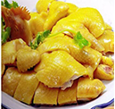
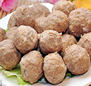
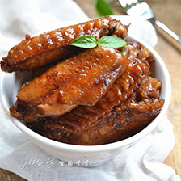
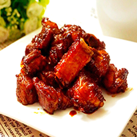
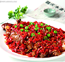
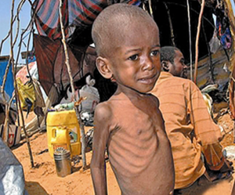

- 玖号厨房
- 学烘培
- 写实派
-

白切鸡，油而不腻，肉质鲜嫩
玖号厨房15432浏览
-

潮汕牛肉丸是广东有名的汉族小吃，来源于客家菜
玖号厨房14360浏览
-

可乐鸡翅，味道鲜美温中、降逆止呕、化痰止咳
玖号厨房14360浏览
-

糖醋排骨肉质鲜嫩补肾、益气、润燥
玖号厨房14360浏览
-

剁椒炒肉口感滑嫩、韧性足、口味纯
玖号厨房14360浏览
详细步骤
- 1.蛋白质分三次加入白砂糖，大至干性发泡，即出现挺立的尖角。
- 2.蛋黄中浇入白糖搅拌均匀。
- 3.蛋黄加入色拉油、牛奶搅拌均匀。
- 4.将蛋白分次加入到蛋黄中，自上而下搅拌均匀。
- 5.加入低筋面粉，搅拌均匀。
- 6.分次将打好的蛋白搅拌入蛋黄液中。
- 7.倒入8寸蛋糕模，烤箱预热150度，烤50分钟即可。
- 8.抹上奶油，用刀抹平。用菊花嘴挤上花朵后，把切好的水果按一定的规律摆好。
制作时间：30-60min12356浏览
- 分享到

在非洲许多小孩因缺少食物……
原因：政局长期动荡，曾发生多次政变和兵变；粮食不能自给；交通不便，森林资源无从开发。
中非共和国基本靠自给来满足粮食需求，但是还是有很多人要忍受营养不良和饥荒的折磨。这是因为那些富有的农场主往往会选择将自己的粮食卖往国外来换取金钱，而不愿意低价将粮食卖给本国的国民。
食物丰富的孩子
营养良好，一些微量的元素的到了补充，例如铁、钙等，促进骨骼的生长和身体的发育。
有益于促进孩子大脑发育成长、改善大脑功能、增加孩子记忆力。事实上，大脑是一个非常饥饿的器官，也是第一个从食物中吸收营养的人体器官。
写实派唤起我们对食物的感恩，激活我们的脑力和记忆
-
首页
-
吃货圈
-
趣视频
-
我